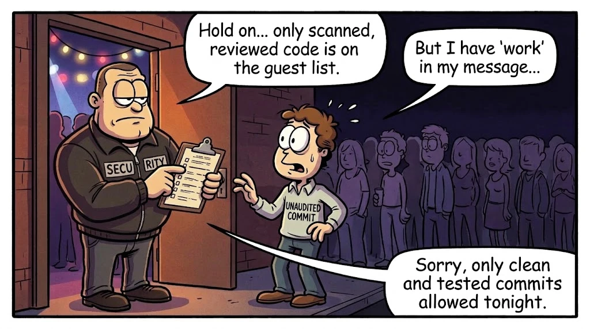
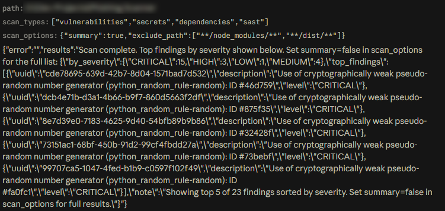
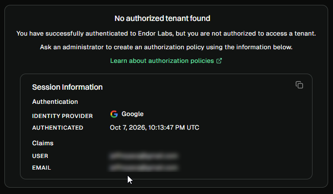
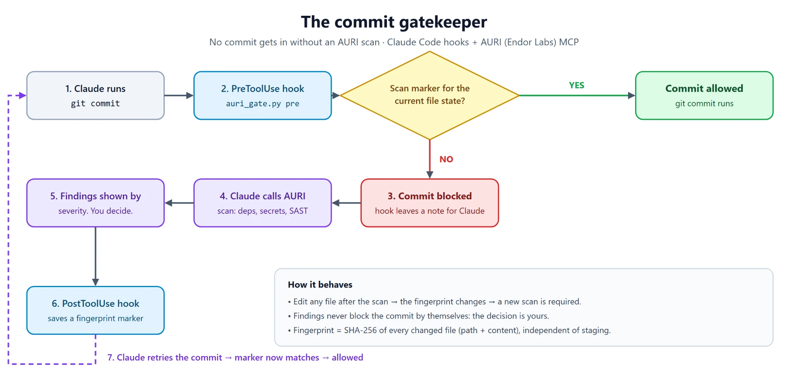
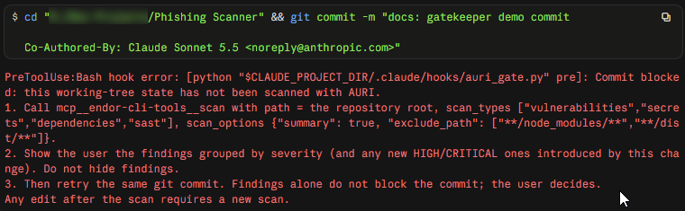
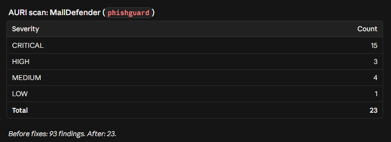
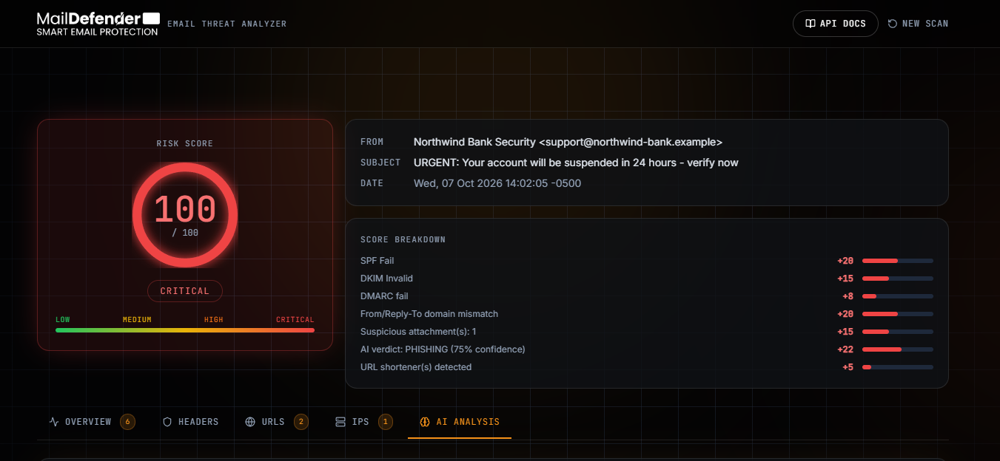
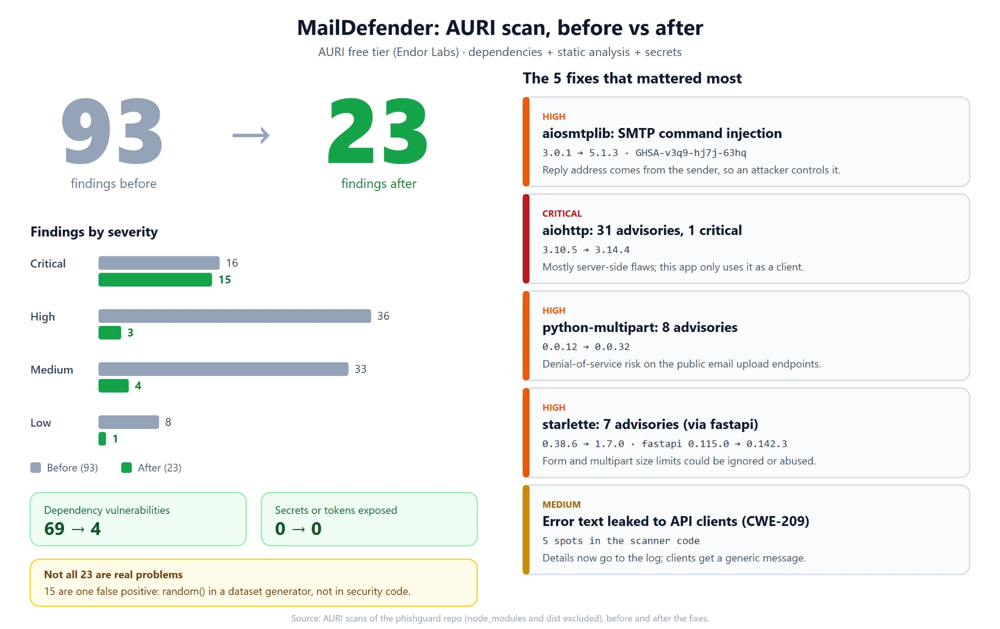

Let's be realistic: these days, people just getting into programming take it for granted that Claude, ChatGPT, Cursor, or whatever flavor of AI you prefer will write clean, well-structured, commented code that is fully hardened against every vulnerability. Most of these "helpers" even warn us: treat this code as boilerplate or an MVP that needs review. You don't tell Claude "build a SaaS and deploy it" and then sit back laughing while you toast champagne to your first successful funding round. WRONG. That is not what happens.
What actually happens is this: you build your app in record time, skip the code review, make a commit, push to GitHub, deploy to your favorite host, and forget about everything else. I think we're skipping an important step, one that we could add to our development flow with little to no effort, whether you're a vibe coder or a "traditional" programmer who uses AI as an assistant and not as an underpaid junior developer.
I'm talking specifically about AppSec (application security) tools. The AI itself can already do some of this, but it's not the same as a tool built to find exposed tokens, outdated dependencies, errors that leak internal information, and the like.
In other times (or in this same era, without MCP) we could use tools like pip-audit, npm audit, or semgrep, and get a result similar to what the tool I'm about to show you gives. I'm only talking about the free version of this one, because the paid version looks MUCH more complete. But free or not, this is something many new programmers are ignoring completely: apps get deployed every day with zero attention to the security of secrets, personal data, or any confidential information. Apps with outdated libraries and known vulnerabilities, simply because the AI used and suggested them.
With an MCP in the loop, it's much easier for anyone who wants to ship an app in record time to have a minimum of security. I'm talking about AURI, an MCP from Endor Labs whose free tier lets us run a vulnerability scan locally, from our own assistant, on our shiny new app. Less time spent and less risk from deploying without a decent process behind it.
What is AURI and what is it for?
Basically, AURI is a security reviewer for your code. You connect it to your AI assistant of choice and it checks several things, even on the free tier: the libraries your project uses and the code you wrote (or that an AI wrote for you, wink wink).
What it's for:
- Libraries with known flaws. Almost every project uses other people's code, and security bugs are sometimes discovered in that code after you installed it. AURI compares the versions you use against a list of known flaws and tells you which version to upgrade to.
- Bugs in your own code. It flags bad practices, like showing internal error messages to users.
- Forgotten keys. It looks for passwords or tokens that were left written in the repository.
- Malicious packages. It can check whether a package is dangerous before you install it.

Why is it useful with AI-assisted development?
Trust me: an AI is very fast and knows a lot, but it doesn't always get decisions right. In the end it will pick whatever it considers most convenient, and you have to keep in mind two little things called hallucinations and biases: problems that come from the data the model was trained on. Every provider works daily to reduce them, but they're not 100% eliminated.
I'm sure you've asked your AI of choice for a Docker container for an app that would do wonders. It suggested a stack, and when you bring up docker compose you find that one of the requirements throws an error because it doesn't exist. That happens because the AI gave you a library name that was misspelled, obsolete, or flat-out invented.
And from there comes an even bigger cybersecurity problem that many ignore: package impersonation. It doesn't take much for an attacker to publish a library with a name similar to a legitimate one (or exactly the one the AI tends to invent) and wait for someone to install it without checking. It even has names: typosquatting when the error is a typo, and slopsquatting when the name was hallucinated by an AI.
This is where AURI comes in. It reviews dependencies and, based on its data, suggests the changes you need: an outdated library with known vulnerabilities, for example. In these cases, a tool like this is a lifesaver while programming, especially when time is critical.
AURI in the middle of the implementation phase
Let's be honest: in small or single-developer apps we love to jump straight to CD and forget about CI. Of course, it's the most tedious part. We all want to see our app live and put it on GitHub and LinkedIn so the world sees how proactive we are and how much we love creating. It sounds fun and efficient, but it's not ideal: the CI phase matters even in small projects, because that's where we run the tests and checks that prevent a mistake capable of compromising our app.
CI/CD in one line: CI (continuous integration) means checking the code every time it changes; CD (continuous deployment) means publishing it automatically once it passed that check.
In security terms, AURI fits in that CI phase. It checks dependencies, secrets, and our own code (note: not infrastructure, like nginx or Docker). Every time we make a change it can analyze the project and give us suggestions to fix things before deployment.
Now you're probably wondering: how am I supposed to do this if my infrastructure isn't that of a multi-billion-dollar company? I don't have thousands of dollars for a pipeline on AWS or Azure with CodePipeline, ECR, Fargate and friends. It's just me and my commits against the world. But even if the app is small, with a bit of ingenuity and free tools like AURI there's always a solution.
An important detail: Endor Labs' free tier doesn't let us use AURI in GitHub Actions. There is an official action, but it requires a tenant (namespace) that the free plan doesn't include. It would have been fantastic to run AURI from GitHub before every deployment, but I couldn't find a way (in fact, my attempt to get a tenant ended on a screen that said "No authorized tenant found").

The solution is to automate AURI locally, before making a commit. With a Python script I stop any commit made from Claude so that AURI reviews it first, shows me the findings, and lets me decide: fix them, or commit at my own risk.
The git commit bouncer
Claude Code lets you configure hooks: commands that run on their own before or after Claude uses a tool. With that I built a nightclub bouncer, but for commits: nobody gets in without going through AURI.

How it works
- Before the commit. Every time Claude is about to run something in the terminal, the bouncer looks at what it is. If it's not a
git commit, it lets it through without asking anything. If it is, it checks whether the current state of the files has already been scanned. If not, it blocks the commit and leaves Claude a note with instructions. - Claude scans. Following the note, Claude calls AURI's
scan(dependencies, secrets, and code analysis) and shows you the findings by severity. - The bouncer takes note. When the scan finishes, a second hook saves a marker: "this exact state of the project has been reviewed".
- Claude retries. Now the bouncer finds the marker and lets the commit through.
If you change even one line after the scan, the marker no longer matches and you have to scan again. That way nobody reviews one version and commits another.
The state fingerprint
To know whether something changed, the script computes a hash (SHA-256) from the path and content of every modified or new file. It doesn't depend on what's in staging, so a git add doesn't invalidate the marker. Markers live in .git/auri-scan/, so they're never pushed to the repository.
Why does the script block, and not AURI?
AURI's MCP can only be called by Claude, not by the system, so a regular git hook can't talk to it. The trick is to block the commit and force Claude to run the scan: the bouncer doesn't review anything, it just makes sure somebody does.
The script
"""Gate `git commit` behind an AURI scan.
pre (PreToolUse on Bash): block `git commit` unless the current working-tree
state was already scanned; tell Claude to run the scan and report.
post (PostToolUse on the AURI `scan` tool): record the scanned state.
The state fingerprint hashes every changed/untracked file by path and content,
so it does not depend on what is staged.
"""
import hashlib
import json
import re
import subprocess
import sys
from pathlib import Path
def git(*args):
return subprocess.run(
["git", *args], capture_output=True, check=True
).stdout
def fingerprint():
h = hashlib.sha256()
out = git("status", "--porcelain", "-uall", "-z").decode("utf-8", "replace")
paths = set()
entries = out.split("\0")
i = 0
while i < len(entries):
e = entries[i]
i += 1
if len(e) < 4:
continue
status, path = e[:2], e[3:]
paths.add(path)
if status[0] in "RC": # rename/copy: next entry is the original path
i += 1
root = Path(git("rev-parse", "--show-toplevel").decode().strip())
for p in sorted(paths):
h.update(p.encode())
f = root / p
h.update(f.read_bytes() if f.is_file() else b"<missing>")
return h.hexdigest()
def marker_dir():
d = Path(git("rev-parse", "--git-dir").decode().strip()) / "auri-scan"
d.mkdir(exist_ok=True)
return d
def main():
mode = sys.argv[1]
data = json.load(sys.stdin)
if mode == "post":
(marker_dir() / fingerprint()).write_text("ok")
return 0
cmd = (data.get("tool_input") or {}).get("command", "")
if not re.search(r"\bgit\s+(?:-\S+\s+)*commit\b", cmd):
return 0
if (marker_dir() / fingerprint()).exists():
return 0
sys.stderr.write(
"Commit blocked: this working-tree state has not been scanned with AURI.\n"
"1. Call mcp__endor-cli-tools__scan with path = the repository root, "
'scan_types ["vulnerabilities","secrets","dependencies","sast"], '
'scan_options {"summary": true, "exclude_path": ["**/node_modules/**","**/dist/**"]}.\n'
"2. Show the user the findings grouped by severity (and any new HIGH/CRITICAL "
"ones introduced by this change). Do not hide findings.\n"
"3. Then retry the same git commit. Findings alone do not block the commit; "
"the user decides.\n"
"Any edit after the scan requires a new scan.\n"
)
return 2
if __name__ == "__main__":
try:
sys.exit(main())
except Exception as exc: # never break the session because of the gate itself
sys.stderr.write(f"auri_gate: {exc}\n")
sys.exit(0)How to enable it
Save the script as .claude/hooks/auri_gate.py and register it in .claude/settings.local.json:
{
"hooks": {
"PreToolUse": [
{
"matcher": "Bash",
"hooks": [
{ "type": "command", "command": "python \"$CLAUDE_PROJECT_DIR/.claude/hooks/auri_gate.py\" pre" }
]
}
],
"PostToolUse": [
{
"matcher": "mcp__endor-cli-tools__scan",
"hooks": [
{ "type": "command", "command": "python \"$CLAUDE_PROJECT_DIR/.claude/hooks/auri_gate.py\" post" }
]
}
]
}
}But does it actually work? The test
Because a script that "should work" is not a script that works. I made a real, minimal change (adding test_email.txt to .gitignore, because it contained my real email headers, oops) and asked Claude to commit it. Here's what happened:
- The bouncer stopped me at the door. The commit was canceled and Claude received the note: "Commit blocked: this working-tree state has not been scanned with AURI".
- Claude ran the AURI scan following that note and brought me the summary: 23 findings (15 critical, 3 high, 4 medium and 1 low). None new from my change.
- Second attempt, and in. With the marker saved, the commit went through without drama.
- To prove it can't be fooled, I edited the file again and tried to commit without scanning. Blocked again. The bouncer can't be bribed.


A stumble I'll save you from: if you chain everything on one line (edit && git add && git commit), the bouncer cancels the entire command before anything runs, including your edit. The marker is only valid for the state that exists at that moment, so first edit and git add in one command, and leave the commit for another.
What this bouncer does NOT do (because overpromising is rude)
- It doesn't block on findings. It only blocks when a scan hasn't been run. The final decision is yours: fix, or commit at your own risk.
- It only watches commits made from Claude. If you type
git commityourself in your terminal, the bouncer never knows. It's a personal filter, not a replacement for a real CI. - If the bouncer goes down, it doesn't lock you out. If the script errors, it lets the commit through instead of breaking the session.
- Every commit takes as long as the scan takes. And it scans the whole repo, not just your change, so you'll see the same findings until you resolve them.
A real use case
As a hobbyist app developer, I have a website for checking emails. What the app does is take an .eml (a raw email) and, with a small AI (specifically one trained only for this function; they're called BERT and there are several versions), scan it and give you a score and insights on whether the email is legitimate or whether there are signs of phishing, whaling, spear phishing and the like. The tool uses several OSINT sources to check IPs, links and addresses, and has an API that can be called from other apps. It works great for automations from Jira, for example, calling it from a workflow.
I used AURI to scan my code, which according to me and my big ego should have no compromised libraries and no flaws. But that wasn't the case (HURT EGO). A security app with half-baked security; the irony isn't lost on me.

What AURI found: 93 findings
| Type | Count |
|---|---|
| Dependency vulnerabilities | 69 (1 critical, 34 high, 26 medium, 8 low) |
| Own code (static analysis) | 24 |
| Exposed secrets or tokens | 0 (thank goodness) |
Most of it came from the same thing: versions pinned months ago that nobody looked at again. Some of the stars:
aiohttp 3.10.5: 31 advisories, including a critical one (the parser accepted null bytes and control characters in response headers). An important nuance here: most of those advisories affect the server side of the library, and my app uses it only as a client (to call VirusTotal and friends). Even so, upgrading cost one line.aiosmtplib: SMTP command injection. My favorite on the list, because it really applied. My app replies to whoever forwards it an email using the sender's address, and that address is controlled by whoever sends it. With line breaks in it, someone could sneak in SMTP commands. Fix: upgrade from 3.0.1 to 5.1.3.python-multipartandstarlette: denial of service in forms. My email upload endpoints are open to anyone, so a malformed body or unbounded headers could exhaust CPU or memory.- Frontend (
vite,postcssand friends): more than a dozen advisories, all in build tools. They don't affect the compiled site, but a vulnerable dev server on a developer's machine is no joke. - Own code: exposed error messages. Five scanners (VirusTotal, AbuseIPDB, urlscan and the AI analyzer) returned
str(e)to the client when something failed. That kind of exception can leak paths, internal URLs or versions. Now the detail goes to the log and the user gets a generic message.

What wasn't such a big deal (the noise)
A big part of what it found was noise, and learning to tell the difference is part of the job:
- 15 "critical" findings for using
random, in the script that generates my synthetic training data. It doesn't generate keys or tokens, so it's a false positive. Switching tosecretswould only break the reproducibility of my dataset. - A couple of advisories in a dev script that runs on my machine, with a fixed URL.
- A handful of advisories in Tailwind build tools, with no patch available, that are fixed with a major migration deserving its own PR.
After fixing
I bumped the versions, tested the app (it starts, responds, and analyzes emails just like before) and scanned again: from 93 findings down to 23. Of those 23, 15 are the random false positive and the rest are dev tools or things with no patch. All vulnerabilities in aiohttp, python-multipart, starlette and aiosmtplib were closed.
Conclusions
After this whole journey, here are my conclusions:
- My ego didn't survive, but my app did, and better. I closed 65 of the 69 dependency vulnerabilities, and the one I cared about most (the SMTP injection) was in a library I didn't even know was outdated.
- A tool doesn't replace judgment. Of 93 findings, 15 "critical" ones were noise and the most important one in practice was only marked "high". AURI finds; deciding what matters in your app is still your job.
- AI writes fast, but doesn't review what it writes. Almost the whole problem came from versions that someone (an AI, me, doesn't matter) pinned once and never looked at again. Putting the review in the same flow where the code is generated changes everything.
- Security doesn't have to cost an enterprise pipeline. With a free MCP, a script of about 90 lines and a bouncer that can't be bribed, a one-person project can have a reasonable filter before every commit.
- Let's be honest about the limitations. The free tier doesn't run on GitHub Actions, the bouncer only watches commits that go through Claude, and this doesn't replace a real CI with infrastructure review. It's a first filter, not the Great Wall of China.
My advice: if you use AI to code, run your project through a tool like this before deploying. It takes little time, costs nothing, and keeps your app from becoming somebody else's lesson on Twitter. I already feel calmer, and a bit happier making my commits, knowing that before anything enters my repository it goes through a bouncer that can't be bribed.
And you, how many vulnerabilities do you think your app has right now? I thought none, too.